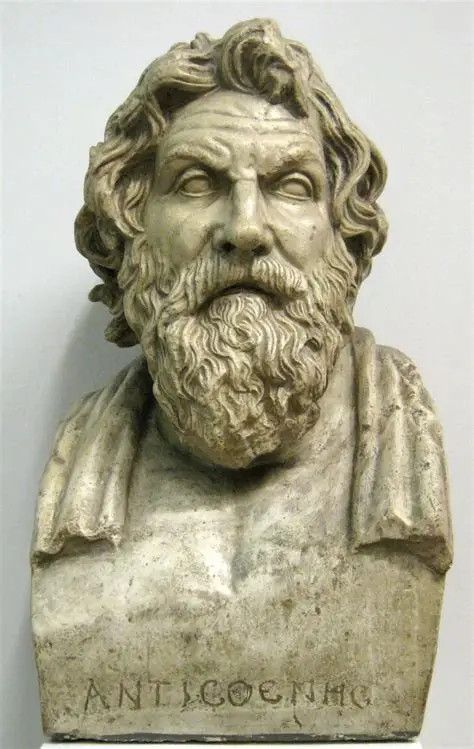

Welcome to the Mathematical World!
Aristarchus of Samos
Sun in Center Guy
Aristarchus of Samos (c. 310 BCE – c. 230 BCE) was a Greek astronomer and mathematician, best known for being the first to propose a heliocentric model of the universe — placing the Sun at the center and the Earth orbiting around it. Though his idea was largely ignored in antiquity, it foreshadowed the Copernican revolution nearly 1,800 years later.

Background
Aristarchus was born on the island of Samos in the eastern Aegean Sea. He studied at Aristotle’s Lyceum and may have been a student of Strato of Lampsacus. His ideas show a bold departure from the geocentric tradition of Plato, Aristotle, and Eudoxus.
Key Contributions
-
(a) Heliocentric Theory
Aristarchus suggested that:
- The Sun is stationary at the center of the universe.
- The Earth rotates on its axis once daily.
- The Earth and planets revolve around the Sun in circular orbits.
-
(b) Measuring Distances to the Sun and Moon
In his surviving work On the Sizes and Distances of the Sun and Moon, Aristarchus attempted to calculate the relative distances and sizes of the Sun and Moon using geometry.
Using a right triangle formed when the Moon is at first or third quarter phase, he estimated:- At half-Moon, the angle between Sun–Earth–Moon is slightly less than \(90^\circ\).
\[ \text{Sun distance} / \text{Moon distance} \approx 18–20 \] (The real value is about \(390\).) His instruments limited accuracy, but the attempt was groundbreaking. -
(c) Relative Sizes of the Sun and Moon
He also deduced:- The Sun is much larger than the Earth.
- The Earth is larger than the Moon.
By comparing angular sizes, he reasoned the Sun must be vastly larger — which may have inspired his belief that the Earth orbits the Sun.
Influence and Legacy
- In Antiquity: His heliocentric theory was rejected because it contradicted Aristotelian physics and lacked observational proof. The geocentric model of Ptolemy (2nd century CE) dominated instead.
- In Later Science: Archimedes mentioned Aristarchus in The Sand Reckoner, noting that he placed the Sun at the center.
- In the Renaissance: Nicolaus Copernicus cited Aristarchus as a precursor when developing his heliocentric model in the 16th century.
Legacy
Aristarchus of Samos is remembered as the “Greek Copernicus” — a visionary who dared to put the Sun at the center of the cosmos. Even though his contemporaries dismissed his ideas, his insight foreshadowed the scientific revolution that transformed astronomy nearly two millennia later.
All rights reserved by the Mathematical Unity
Contact: +8801400044645
Email: mathematicalhorse1453@gmail.com
Our Discord Server: Mathematical Unity [Ulus Riyadiyat]